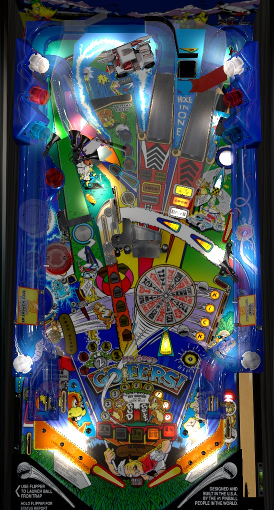

The biggest source of points on No Good Gofers is the standard multiball, but playing multiball more than once gets much more difficult quite rapidly. Shoot the center ramp until it is lit for Raise Gofer, then hitting it one more time will in fact raise one of the gophers. Hit a gopher to be able to lock a ball behind it; lock 2 balls then shoot the Putting Green center lane for multiball. In multiball, the side ramp scores a jackpot, and making a jackpot lights Hole In One for super jackpot.
To play through standard game progression, shoot shots lit for Drive until Putt Out is lit at the center lane. Putting out awards the currently indicated value on the Wheel in the playfield. Alternatively, shoot the side ramp to lower the center silver "slam ramp" as the ball comes down the in lane; using the slam ramp to shoot Hole In One scores at least 1,000,000 points and ends the current hole.
There are two types of skill shot in the game.
The standard Gofer Multiball is the best source of points in the game.
Shoot the center ramp until a gopher is raised, then hit the raised gopher to be able to lock a ball behind him. Lock 1 requires hitting and then shooting behind Bud (center ramp), while lock 2 requires hitting and shooting behind Buzz (right ramp), but you always need to shoot the center ramp to work toward raising a gopher. The first multiball requires just one shot to the center ramp to raise a gopher; each subsequent multiball requires 2 more ramp shots than the previous to raise each gopher. The highest I have seen this go is 9 ramp shots to raise a gopher at multiball #5. If you shoot the center ramp 3 times in a row without missing, Bud the gopher will pop up to taunt you and break your rhythm; this does not count as raising a gopher for a lock, since the center ramp was not lit for Raise Gofer. Once balls have been locked behind both Bud and Buzz, shoot the Putting Green center lane to start multiball.
Multiball begins with 3 balls, and it is not possible to add more. The first kickout comes out of the Putting Green and straight towards the flippers with disgustingly high speed; if you're not ready for it, the ball will center drain before you even realized what happened, so hopefully your copy of the game has multiball ball save turned on. The second kickout goes left and ends up in the bumpers. The third kickout goes right and feeds the upper flipper at a controlled speed; this is good, because Jackpot is lit on the side ramp at the start of multiball. Jackpot scores 3,500,000 points, plus 1,000,000 for each standard jackpot made during the course of the game, with no other way to raise it and no limit that I have ever encountered. Scoring a jackpot lights the Super Jackpot, which is at the Hole In One shot; when Super Jackpot is lit, make a center ramp to feed the ball to the left in lane so that the silver slam ramp gets lowered, then shoot up the slam ramp into Hole In One. This is much easier said than done. The first three Super Jackpots score a double jackpot, then a single jackpot + extra ball, then a single jackpot + special; I don't know the sequence after that. Collecting a Super Jackpot relights the regular jackpot. The regular jackpot can also be relit by shooting the right ramp. If the regular jackpot is already lit, the right ramp will stay raised as though lock 2 was ready, and shooting under the right ramp will feed the ball to the upper flipper at a controlled speed, allowing for an easier jackpot shot.
If multiball ends with no jackpots made, a restart is available by shooting the Putting Green center lane within 10 seconds. This "Last Chance" does fully restart the multiball with all 3 balls, but the two balls added to the playfield will come from the plunger lane, so there is no easy pot shot at the jackpot available like there is with the initial multiball kickout.
Progression through No Good Gofers is based on completing golf holes. The two orbits, all three ramps, and the captive ball are lit for Drive at various times. Shoot any shot lit for Drive to make progress on the current golf hole. The DMD will indicate whether the current hole is par 3, 4, or 5; to qualify Putt Out, which ends the hole, you need to hit (par - 2) Drive shots. To Putt Out, shoot the Putting Green center lane. The number of strokes taken to finish a hole starts at 7; your stroke count decreases by 1 if you make a Drive, hit either Bud or Buzz the gopher at any time, or make a Sand Trap shot, and it increases by 1 if you drain the pinball. You cannot have more than 7 strokes on a hole, and you cannot have fewer than 2 unless you score a Hole In One.
Any shot to the side ramp qualifies a Hole In One, meaning the silver "slam ramp" will be moved down to playfield level when the ball rolls through a left in lane. Shooting the ball up the slam ramp and into the Hole In One hole on the upper playfield instantly ends the current golf hole with a score of 1; you also receive the Hole In One Award, equal to 1,000,000 points plus an additional 100,000 for each side ramp shot made over the course of the game.
Completing a hole of golf scores the currently selected Wheel award, indicated by the yellow Wheel Value insert pointing at the wheel on the playfield. Throughout the game, the position of the wheel can be moved one space at a time by hitting any pop bumper, the captive ball, or either orbit's spinner. There are 16 (!) possible wheel awards, so it's time for a big-ol' list of bullet points:
After completing hole 4 (could be 5 or 6 based on game settings), the Putting Green center lane will be lit for extra ball.
After completing hole 7, Short Circuit begins; this is a count-up mode that begins at 2,000,000 points and increases for a while (I'm not sure exactly how long). Hit any of the Kick standup targets in the lower right to lock in the value, then shoot Buzz in front of the right ramp to collect the locked in value.
After completing hole 9, Hole In One Challenge instantly begins, which is the game's wizard mode. You're given a whole bunch of awards: 1,000,000 points per Hole In One made in the game so far, Super Jets, and Big Spinners. The side ramp is lit for Millions-Plus (1,000,000, increasing by 1,000,000 each time). Ripoff rules are in play, which means all shots score 100,000 points plus an additional 25,000 for each captive ball hit during the multiball, and hitting the captive ball 5 times adds a ball to the playfield. Finally, making a Hole In One scores an instant special. Hole In One Challenge starts as a 4-ball multiball; up to 5 balls can be in play at once thanks to the add-a-ball from the captive ball. Super Jets and Big Spinners last for the rest of the current ball; all other awards last until single ball play resumes. There is a sizable ball save at the beginning of Hole In One Challenge. Once Hole In One Challenge ends, you need to complete 9 more holes of golf to play it again.
The captive ball always gives 5 awards in the same sequence. Collecting all 5 awards once is considered one completion of the captive ball.
Completing the captive ball twice qualifies Ripoff Multiball; hit the captive ball within 20 seconds to start multiball. Ripoff Multiball starts with 3 balls; hitting the captive ball 5 times adds one more ball to the playfield, with a maximum of 5 balls in play. Shoot any ramp during Ripoff Multiball to score 100,000 points plus an additional 25,000 for each captive ball hit that has been made during multiball. The add-a-ball can be used an infinite number of times. Each successive play of Ripoff Multiball requires one more captive ball completion than the previous one.
Shooting either Cart Path orbit scores 50,000 points. If you combo the orbit by shooting it several times in a row without missing or waiting too long in between, the subsequent shots each score 50,000 more than the previous one until you miss.
The far left in lane briefly lights the right orbit for a Cart Path Award, and the right in lane does the same with the left orbit. The Cart Path awards are listed near the flippers: 2x bonus, then Increase Cart Path, then 3x bonus, then Increase Cart Path again, then 4x bonus, then 5x bonus + light extra ball. You need to go through an in lane to get any Cart Path award. Increase Cart Path means that the first shot to a Cart Path is increased by 50,000 points, and subsequent combos to the same orbit are still worth 50,000 more than the last one. The extra ball at 5x bonus can only be earned once per game. On default settings, all Cart Path awards including the corresponding bonus multipliers are reset after each ball.
At the start of a ball, one pop bumper will be lit, and the other two are unlit. Unlit bumpers score 2,500 points; lit bumpers score 5,000 points; flashing bumpers score 7,500 points. The bumper value is added to both your score and the current Sand Trap value. Hit the Adv. Jets post target near the red pop bumper to upgrade one bumper from unlit to lit or from lit to flashing. Receiving Super Jets instantly advances all three bumpers to flashing.
The Sand Trap value starts at 100,000 points. It is raised by the value of each hit bumper. The center standup targets that face right also add to the Sand Trap value, but I'm not certain by how much. The Adv. Trap standup target in front of the blue pop bumper also raises the Sand Trap value and qualifies the Sand Trap mini-mode. When Sand Trap is qualified, shoot into the lower left saucer to start it. This instantly adds 1 stroke to your current golf score. The Sand Trap value will slowly count down, and a light will move between the four Kick targets in the lower right. Press the flippers to fire the ball and pause the Sand Trap countdown; if you hit the lit Kick target, you score the Sand Trap value. The C target is usually the one you should aim for to collect the Sand Trap value. Whether you make or miss the Sand Trap shot, the Sand Trap value is not reset, and can be built to well over 1,000,000 points over the course of a good game. According to the game manual, an extra ball is available for completing enough Sand Trap awards, but I've never seen this happen.
The Driving Range value starts at 200,000 points and is increased by about 50,000 (sometimes slightly less) with each shot to the right ramp. Any time the slam ramp is down, shoot up the slam ramp and in between the golf cart toy and Hole In One to score the current Driving Range value.
If you shoot off the slam ramp to the upper playfield and hit the golf cart toy, you receive the Cart Award, which is increased by captive ball hit #4. The game also keeps track of the number of times the golf cart has been hit; at 3, 8, and 13 hits, the game automatically start the Cart Attack, Pop a Gofer, and Speed Golf modes respectively. I don't know how the sequence continues or if it does at all.
There is a kickback in the left out lane that is lit at the start of the game, carries its status over from ball to ball, and can be used up. Completing the Kick targets in the lower right adds one use of the Kickback; hit a lit target to make it flash, hit a flashing target to light it solidly, and light all 4 targets solidly to earn the kickback. The four Kick targets face away from the flippers, so they can usually only be hit a ball that is out of control around the playfield; there is a 5th standup target, though, located above the first K that does face the flippers, and hitting this target spots one hit to one of the four main Kick targets. Multiple uses of the kickback can be queued up, by default, you can store a maximum of 1 additional kickback use (for a total of 2 lit at once), but game settings can allow up to 8 stored kickbacks.
No Good Gofers has a conventional in/out lane setup, but with 2 in lanes on the left instead of 1. The far left and right in lanes each light the opposite orbit for a Cart Path award advance. Following a side ramp shot or during various modes, the left in lanes lower the silver slam ramp, allowing for a shot at the upper playfield golf cart toy or the Hole In One. Out lanes are lit alternately for extra ball (left) or special (right) after earning the Outlanes wheel award. See the paragraph above for information about the automatic kickback in the left out lane.
End of ball bonus is based on completed golf holes: you get 10,000 points for a score of 7, 25,000 for a 6, 50,000 for a 5, 75,000 for a 4, 100,000 for a 3, 125,000 for a 2, or 250,000 for a 1. If you have completed 18 holes of golf, your scores on each hole no longer matter, and you receive a 2,500,000 point bonus for a completed course. The sum of the individual hole values is affected by bonus multiplier, but the completed course bonus is not. Bonus multiplier is increased by the 1st, 3rd, 5th, and 6th Cart Path awards on a ball; earn a Cart Path award by shooting an orbit shot immediately after making the opposite in lane. There is no mid-ball bonus collect. By default, bonus multipliers and Cart Path awards are reset after every ball.
I do not know what the value of a special or extra ball would be in competiton/novelty play.
The Hole In One value can be set to revert to the base value of 1,000,000 after it is collected.
The first golf cart award can be set to between 3 and 7 hits, and subsequent golf cart awards can require anyhwere from 4 to 15 additional hits. Defaults are 3 and 5.
The Cart Path bonus multipliers can be preserved after each ball instead of reset.
Players can enter their initials and earn free games for both a high score and/or by setting the machine record for most Hole In Ones in a game.